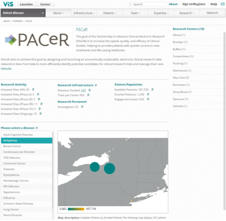

I was the CTO of the company for over two years leading to the acquisition by IMS Health. During my time at ViS I led our development team to launch several versions of our product, managed the product roadmap, presented to VCs in funding rounds, launched innovations that resulted in acquisition of patents, and ultimately supported the acquisition process by IMS Health.
Our web technology is based in Java and built on Apache with a MySQL database. We also use various libraries including Google Maps, and proprietary algorithms for analysis of clinical trial data.
ViS showcase from ViS on Vimeo.
I also developed and launched the new Site Network product which helped us to effectively engage with provider networks and sign up hundreds of hospitals. We also used it to sign up accreditation agencies such as AAHRPP, and major site networks such as BRANY, PACeR, and the BIO trade organization. It offered a novel way for site networks to view their aggregated capabilities for clinical trials.
 More at ViS Research